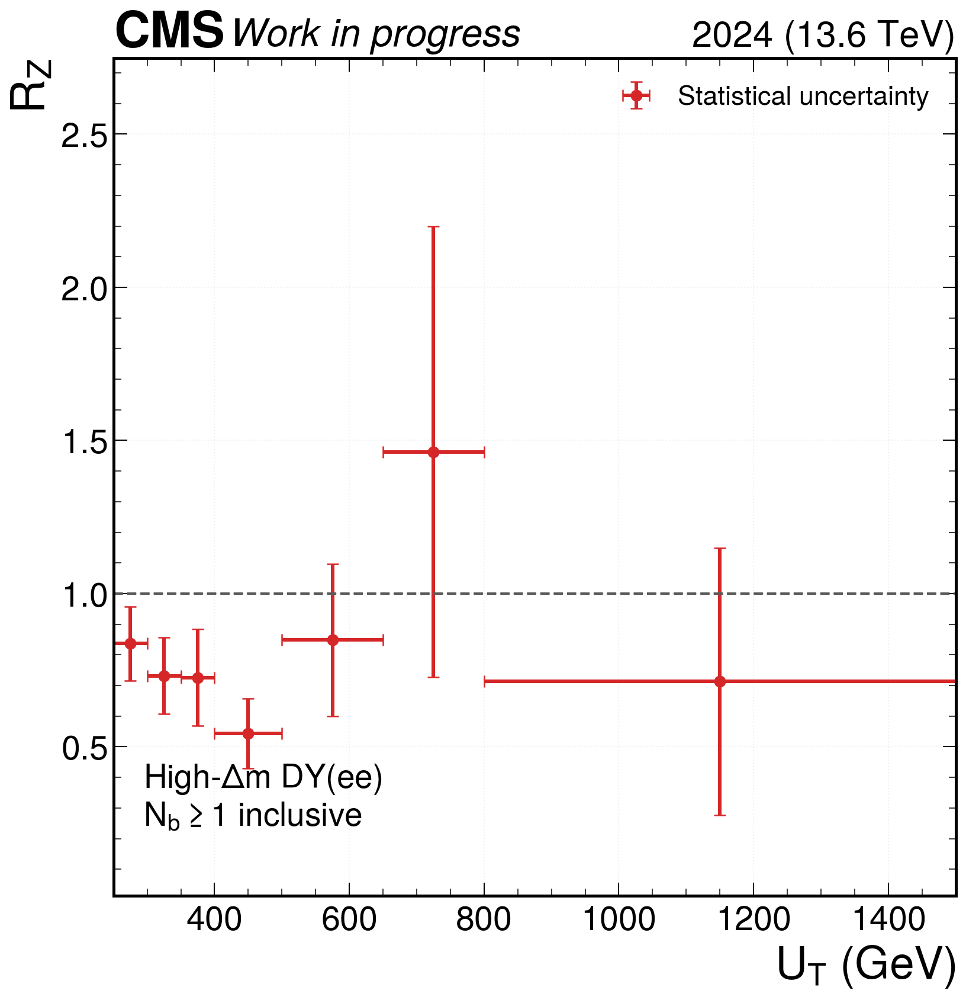
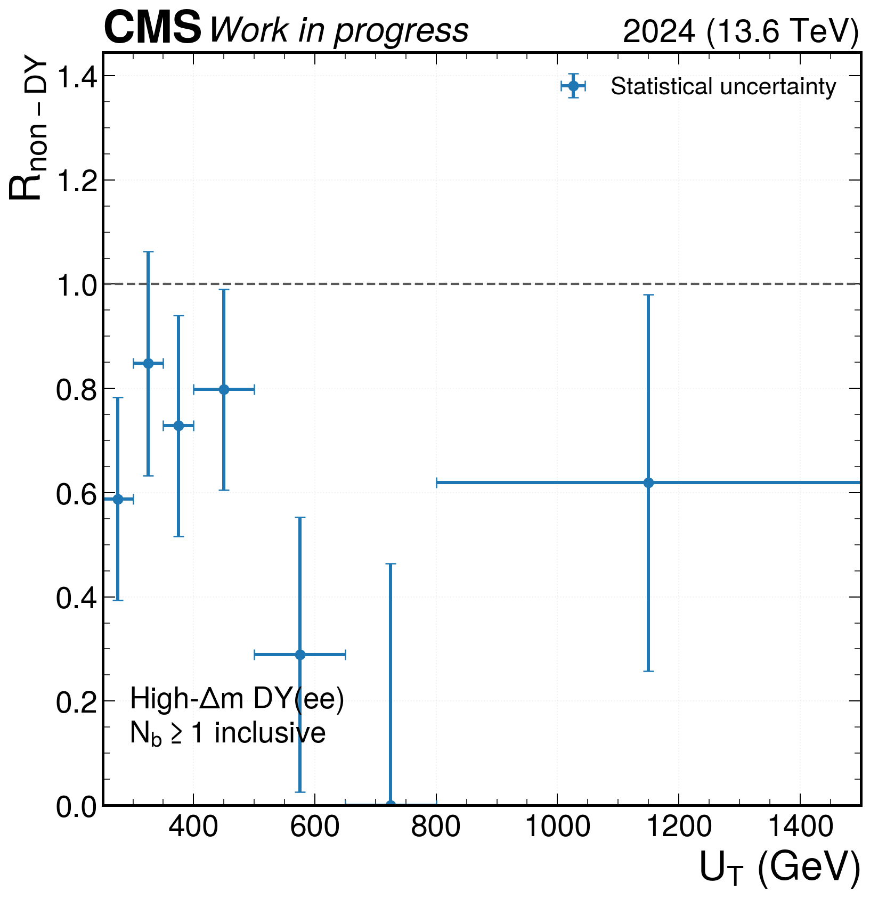
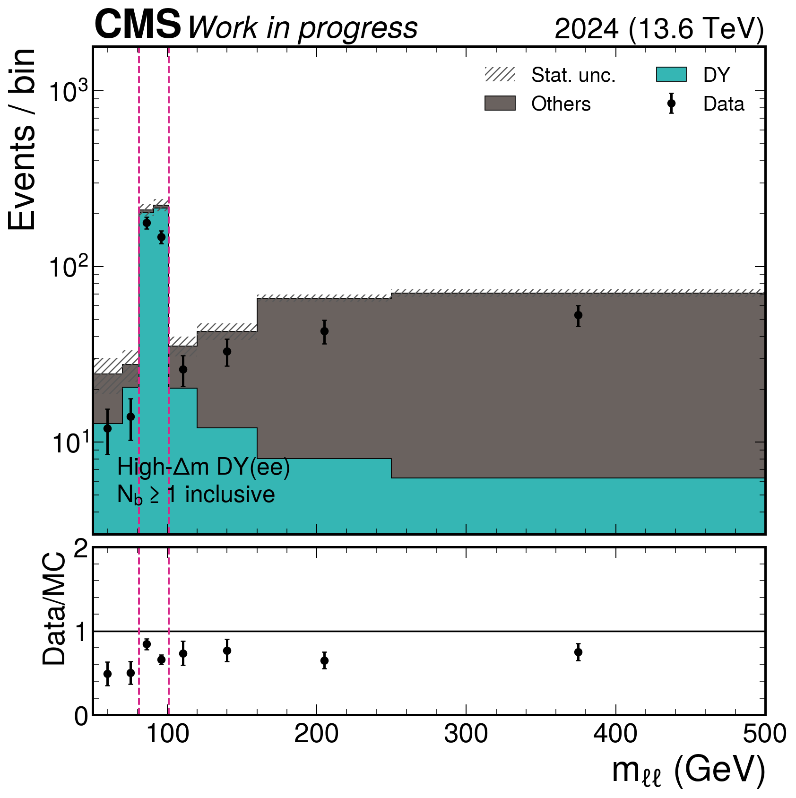
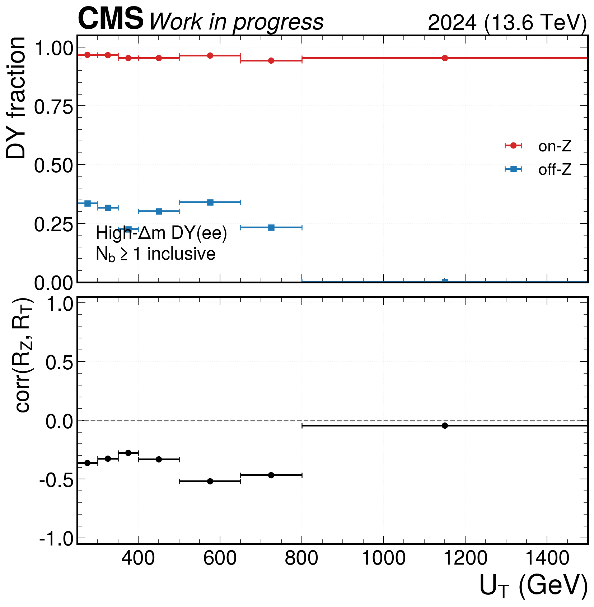
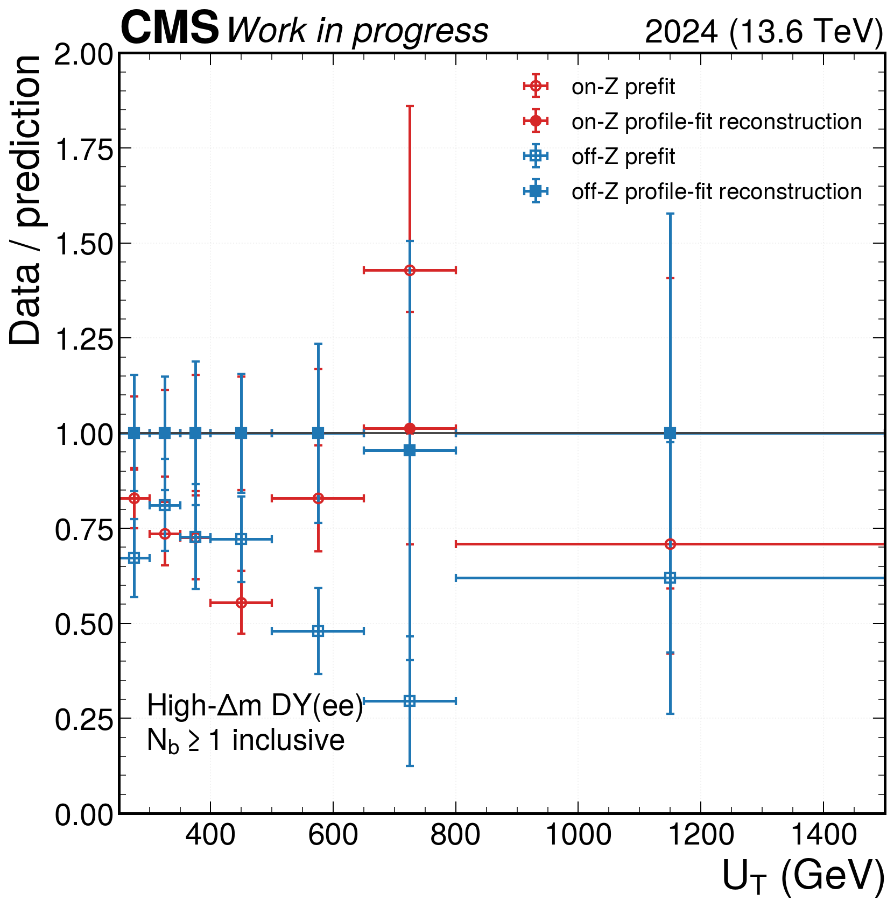
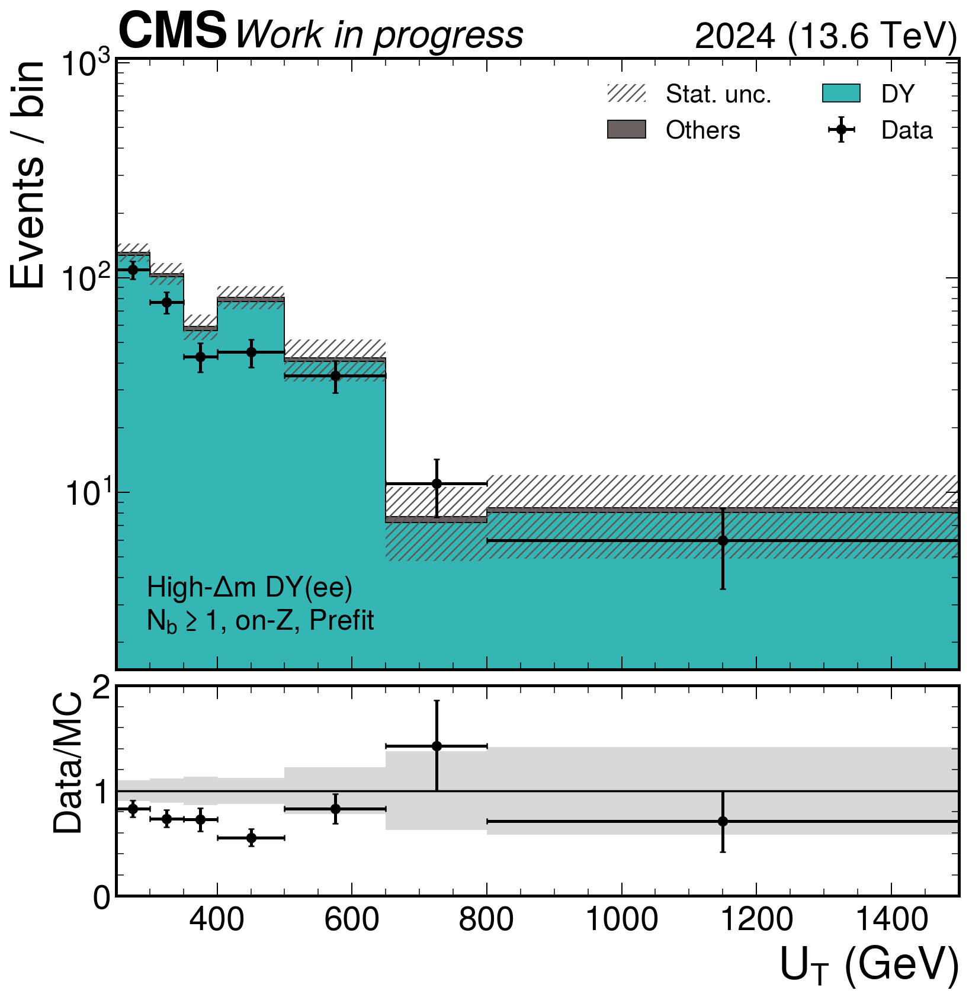
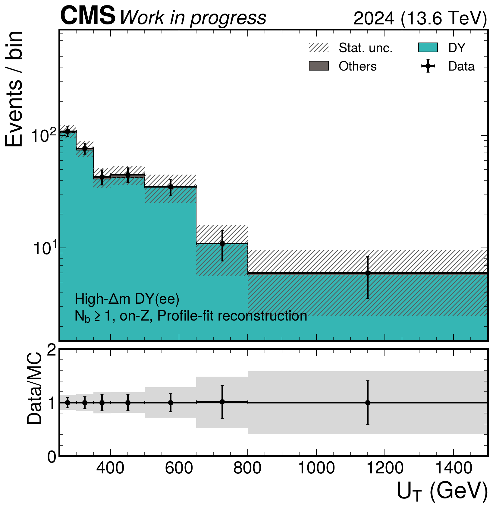
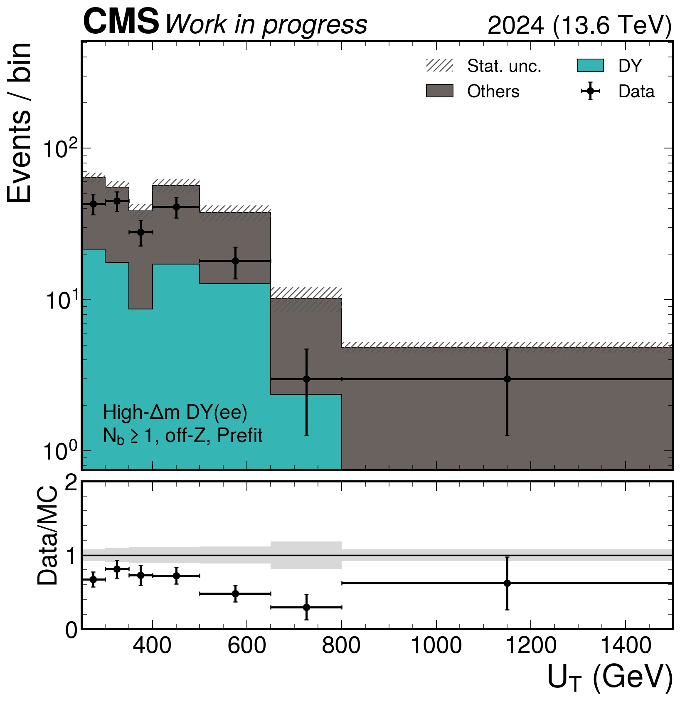
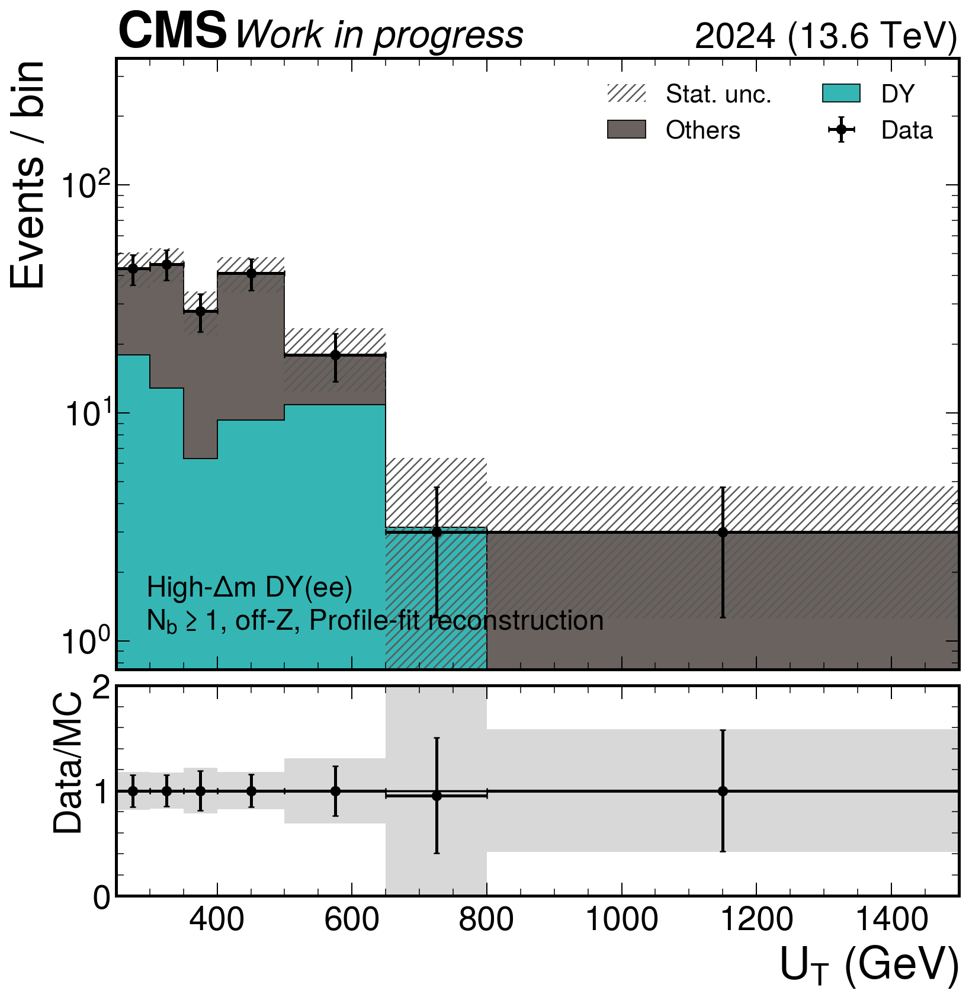

Method: in every UT bin, fit the on/off-Z 2×2 system simultaneously for non-negative RZ and Rother. Data use Poisson likelihoods and weighted-MC statistics enter as Gaussian template constraints. on-Z is 81 < mll < 101 GeV; off-Z is 50 < mll < 81 GeV or mll > 101 GeV.
Interpretation: the profile-fit reconstruction plots are fit diagnostics, not independent closure tests. Channel compatibility provides the first independent validation after both ee and μμ are complete.
| UT (GeV) | RZ | Rnon-DY | corr(RZ,Rnon-DY) |
|---|---|---|---|
| 250–300 | 0.837 ± 0.121 | 0.588 ± 0.195 | -0.361 |
| 300–350 | 0.732 ± 0.125 | 0.848 ± 0.215 | -0.324 |
| 350–400 | 0.726 ± 0.157 | 0.728 ± 0.212 | -0.276 |
| 400–500 | 0.543 ± 0.114 | 0.798 ± 0.193 | -0.330 |
| 500–650 | 0.848 ± 0.249 | 0.289 ± 0.263 | -0.517 |
| 650–800 | 1.463 ± 0.735 | 0.000 ± 0.464 (boundary) | -0.467 |
| 800–1500 | 0.713 ± 0.436 | 0.619 ± 0.361 | -0.042 |









{kind=link}
{kind=link}
{kind=link}
{kind=link}
{kind=link}
{kind=link}
{kind=link}
{kind=link}
{kind=link}